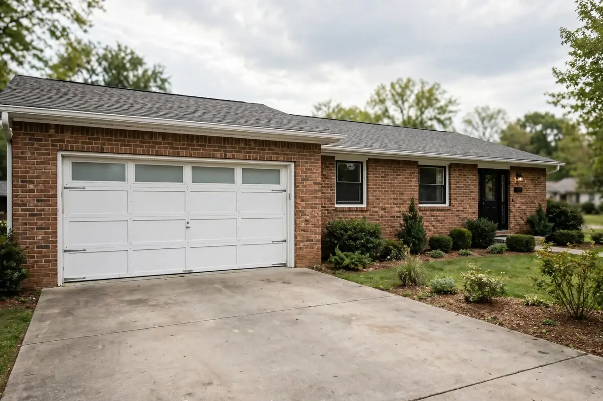

Your local team · Highland Meadows
Garage Doors in Highland Meadows, IL for Early-1990s Raised Ranches
Highland Meadows is a single-family subdivision in western Zion, built from 1990 to 1994, with raised ranch, conventional, and ranch styles and frame construction. It has the strongest parcel evidence of the western subdivisions, with recorded plat units and phases and parcel examples from 1990, 1991, 1992, and 1994. No garage-specific evidence was found, but the early-1990s raised-ranch stock suggests attached one- to two-car garages, including tuck-under layouts in some homes, with doors and openers now around thirty to thirty-five years old. Milwaukee Garage Doors Inc handles repair, installation, springs, openers, panels, off-track work, and maintenance in Highland Meadows. Call (224) 842-7761. The business is open 24 hours, every day.
Local knowledge
Highland Meadows: the Best-Documented Western Subdivision
Highland Meadows stands out in the research for the strength of its parcel evidence. Legal descriptions record numbered units and phases, including Highland Meadows Unit 11 Phase A and later phases, and parcel examples are dated 1990, 1991, 1992, and 1994. Parcel data counts 86 properties with a median age built of 35 years, and a sales list records 16 homes. Styles are raised ranch, conventional, and ranch, with frame construction and lots of around 7,200 square feet, or 0.20 acre, in the examples. The Scottish street names, Brigadoon Drive, Tartan Trail, Shetland Place, and Thistle Lane, give the subdivision a distinctive identity. No garage-specific evidence was found, so the garage pattern is stated as an inference from the stock: attached one- to two-car garages, with tuck-under configurations likely in some raised-ranch homes, and doors and openers around thirty to thirty-five years old.

Services available in Highland Meadows
Garage Door Services Available Across Highland Meadows
The eight services below cover garage door work for Highland Meadows homes. The early-1990s era, the raised-ranch styles, and the possibility of tuck-under layouts shape the work: headroom and opener placement matter, and doors and openers around thirty to thirty-five years old are firmly in the replacement cycle. Each note ties the service to what the parcel evidence shows.
01
Garage Door Repair
Highland Meadows doors date to 1990-1994, so repair work here usually involves hardware with more than thirty years of use. With parcel examples from 1990 to 1994 across several plat units and phases, doors here share an early-1990s age but not a single layout, so each is diagnosed from its own symptoms. The check works through springs, cables, rollers, hinges, tracks, and openers, starting with what the caller says the door is doing.
View service 02Garage Door Installation & Replacement
With parcel examples from 1990 to 1994, many Highland Meadows doors are at the age where replacement is weighed alongside repair. Raised-ranch, conventional, and ranch homes can have different opening heights and headroom, including tuck-under layouts, so the opening is measured as built before a door is chosen. The replacement door is sized to that opening, with springs, cables, and opener matched to the door and to how the garage is used.
View service 03Garage Door Spring Replacement
Springs in Highland Meadows have carried their doors for around thirty to thirty-five years, which is replacement-cycle age. Springs are judged by how the door lifts and by visible condition, since the plat’s phased build means no two doors have had identical use. A door that feels heavy by hand is left alone and the opener is not used to force it.
View service 04Garage Door Opener Repair & Installation
Openers from the early-1990s build wave in Highland Meadows are at the age where gears, sensors, and controls commonly need attention. Early-1990s openers are checked from the motor unit and rail through the remotes, keypad, and the sensors at the base of the tracks. The safety sensors and auto-reverse are tested as part of the same visit, whatever the original fault was.
View service 05Garage Door Panel Replacement
Raised-ranch and ranch homes in Highland Meadows have street-facing attached doors, so a damaged section is both a fault and a visible one. On street-facing attached doors, a damaged section is judged by door model, section size, and the condition of the sections around it. The replacement section must match the door it joins, since a mismatch shows in both appearance and travel.
View service 06Garage Door Off-Track, Cable & Roller Repair
Attached one- to two-car doors in Highland Meadows, including possible tuck-under layouts, depend on aligned tracks and sound cables and rollers. Crooked travel is traced along the tracks, rollers, and cables as one guidance system. Alignment, cable drums, rollers, and spring balance are checked together, since a fault in one part loads the others.
View service 07Garage Door Maintenance & Tune-Up
For doors around thirty to thirty-five years old in Highland Meadows, a regular check finds wear in hardware, seals, and safety features before failure. The check covers lubrication, hardware condition, balance, seals, and the sensors and auto-reverse. Finding wear at that age is the point of the visit, before a small fault stops the door.
View service 08Emergency Garage Door Repair
A stuck-open attached garage door in Highland Meadows leaves the front of the home open, and the phone line is the way to reach help at any hour. Milwaukee Garage Doors Inc is open 24 hours, every day, and the phone number is (224) 842-7761. A door stuck open, off its track, or with a broken spring is left where it is, and the call describes the door’s position and what it was doing when it stopped.
View serviceHow the work is approached
How We Run Garage Door Work in Highland Meadows
Work in Highland Meadows follows the standard checking sequence, applied to early-1990s raised-ranch, conventional, and ranch homes. Tuck-under layouts, where present, add a headroom and opener-placement check. The notes below describe the checks without claims about timing, stock, or boundaries.
The opening, header, and headroom
Raised-ranch homes may have tuck-under garages, where headroom above the door and opener placement need a close look. The opening is measured, the header and jambs checked, and the headroom confirmed before a new door is ordered.
Springs and cables at thirty-plus years
Springs and cables work under tension and carry the door's weight. At thirty to thirty-five years old, their condition is checked before the door is run repeatedly, and spring and cable work is left to a technician.
Opener controls and safety sensors
Early-1990s openers can show gear wear, drifting limits, and sensor trouble. The motor, drive, controls, photoelectric sensors, and auto-reverse are checked together.
Tracks, rollers, and hinges
More than thirty years of cycles wear rollers and hinges and can let tracks drift. Noise, jerky travel, or binding usually traces to this hardware, and the full travel path is checked.
Seals, frame construction, and cold weather
Highland Meadows homes are frame construction, and bottom seals harden with age and cold. A worn seal lets in cold air and meltwater, and in winter a door can freeze to the floor. A frozen door is never forced with the opener.
Parcel evidence, not assumptions
Highland Meadows has the strongest parcel evidence of the western subdivisions, and this page uses it: units and phases, parcel years, styles, and lot sizes from examples. Where evidence is absent, as with garages, the page says so.
Common local problems
Common Garage Door Problems in Highland Meadows
Springs thirty to thirty-five years old
Tuck-under headroom and opener placement
Opener gears, sensors, and controls wearing out
Age-hardened seals
Warning signs
Signs Your Highland Meadows Garage Door Needs Attention
A bang, then a door too heavy to lift
Highland Meadows springs are thirty to thirty-five years old, so a loud bang from the garage is most often a spring reaching the end of its life. The door becomes heavy immediately; do not run the opener against it, and call (224) 842-7761.
Unexplained reversing
Reversing without an obstruction usually means the safety sensors are dirty or misaligned, or the opener force setting has drifted. The sensors and auto-reverse are tested together on every opener check.
A door that has turned noisy
Rollers and hinges with more than thirty years of use turn noisy before they fail, with grinding or rattling as the door travels. That noise is the cue to look at the hardware and the track alignment.
Uneven travel or binding
Uneven travel or binding points to a cable or spring fault on one side of the door. A door in that state can leave its track, so it is not forced, and the cables, drums, springs, and alignment are checked as a system.
The opener strains or the door sticks low
In a tuck-under garage, limited headroom can make opener placement and travel limits more sensitive. An opener that strains, or a door that sticks near the floor, needs the opener, springs, and seal checked together.
Area context
What Shapes Garage Door Work in Highland Meadows
Highland Meadows is best understood through its parcel record: units and phases, dated examples, styles, lot sizes, and Scottish street names. The notes below use that record, plus the inferred garage pattern, to explain the work its homes need.
Built 1990-1994, parcel examples dated
Parcel examples in Highland Meadows are dated 1990, 1991, 1992, and 1994. The subdivision is an early-1990s build, and doors and openers are now around thirty to thirty-five years old.
Raised ranch, conventional, and ranch
Styles recorded in parcel examples are raised ranch, conventional, and ranch, with frame construction. Raised-ranch homes may include tuck-under garage layouts, which affect headroom and opener placement.
86 properties, median age built 35
Parcel data counts 86 properties in Highland Meadows, with a median age built of 35 years. A sales list records 16 homes. Lot sizes in examples are around 7,200 square feet, or 0.20 acre.
Scottish street names
The street names are Scottish and distinctive: Brigadoon Drive, Tartan Trail, Shetland Place, and Thistle Lane. They are the most recognisable feature of the subdivision after its parcel record.
Recorded units and phases
Legal descriptions record Highland Meadows in numbered units and phases, including Unit 11 Phase A and later phases. That recorded plat structure is why the parcel evidence here is the strongest among the western subdivisions.
No association found in the records read
No homeowners association was evidenced in the records read for Highland Meadows. Owners should check their own documents for anything affecting their individual home.
Highland Meadows service coverage
Garage Door Help in Highland Meadows, Zion, IL
This page covers garage door work for Highland Meadows homes in western Zion. The chips name the distinctive streets and the sector parent from the research, not a boundary. Milwaukee Garage Doors Inc is based at 2016 Horizon Ct, Zion, IL 60099, and is open 24 hours, every day.
Brigadoon DriveTartan TrailWest ZionZion, IL 60099
Milwaukee Garage Doors Inc2016 Horizon Ct, Zion, IL 60099, United States
Common work
Garage Door Work Common in Highland Meadows
Spring and cable work at thirty-plus years
Doors from 1990-1994 have springs and cables that have worked for more than thirty years. The general pattern is spring fatigue and cable wear, handled as tensioned parts by a technician.
Opener work, including tuck-under layouts
Early-1990s openers can develop gear wear, sensor misalignment, and control faults, and tuck-under layouts add headroom and placement considerations. The general work checks the motor, drive, controls, sensors, and auto-reverse together.
Seals and hardware after many winters
Seals harden, rollers wear, and hinges tire over thirty-plus winters. The common general work is seal renewal, roller and hinge attention, and track alignment, plus section replacement where damage is confined to one panel.
Notes from local customers
What Customers Say
The crew was proficient and competent, and they made my garage seem better than before.
Premium components were used to rebuild my garage door for reasonably low running cost.
I had a thorough safety check on my garage door, the technician was very detailed.
Plan for the season
How Highland Meadows Seasons Affect Your Garage Door
Spring: checking seals and hardware after winter
After winter, a Highland Meadows check can cover the bottom seal, the moving hardware, and the sensors and auto-reverse, with headroom and opener placement in mind for tuck-under garages.
Summer: when worn rollers turn audible
Heavy summer use exposes worn rollers and hinges on doors thirty to thirty-five years old. Remotes, keypads, and opener limits can be checked in the same visit as the hardware.
Fall: preparing for cold weather
Fall is when the seal, springs, cables, and sensor alignment on an early-1990s door are best checked, before cold weather adds strain to springs and openers.
Winter: frozen thresholds need care, not force
Meltwater refreezing at the threshold can bond a Highland Meadows door to the floor. Never force it with the opener. If a spring snaps, stop using the door and call (224) 842-7761.
Nearby service areas
Nearby Zion Areas
The areas below are other Zion areas with their own pages, including the West Zion sector parent. Highland Meadows shares the western-subdivision pattern with them, though its early-1990s era and parcel record set it apart.
Before you hire
Questions to Ask a Garage Door Company in Highland Meadows
Is a safety-reverse and sensor test part of the visit?
How do tuck-under layouts affect headroom and opener placement?
Who confirms whether a permit is needed for garage door work in Zion?
What should I describe about the door when I phone?
How do you decide between repairing and replacing a door of this age?
Trust and compliance
Codes and Safety in Zion
Adopted codes in Zion
Zion has adopted the 2021 International Building Code and 2021 International Residential Code, effective January 1, 2025, with local amendments.
State licence position
Illinois does not issue a statewide licence covering garage-door work; the only general building-trade contractor licences issued statewide are for roofing and plumbing. Whether City of Zion contractor registration applies to garage-door contractors was not confirmed — ask the City of Zion Building Department.
Safety sensors and auto-reverse
Federal rules (16 CFR Part 1211, UL 325) require residential automatic garage door operators to have entrapment protection: an inherent reversal system plus a secondary entrapment protection device (such as photoelectric sensors or an edge sensor) or a constant-contact control. Test sensors and auto-reverse regularly.
Battery backup
No Illinois battery-backup mandate for garage door openers was found. Battery backup is an opener feature to discuss, not a requirement stated here.
Permits: ask the City first
Whether a City of Zion permit is required for garage-door work, and any fee, was not confirmed on a City source. Contact the City of Zion Building Department, 2828 Sheridan Road, (847) 746-4018, before work begins.
Springs and cables need care
Springs and cables carry high tension. Leave spring and cable work to a technician, and do not remove bottom brackets or fasteners holding spring and cable parts.
Older openings vary
Older garages can have openings that differ from current standard sizes. Measure the opening, headroom and side room before ordering a door so the replacement fits the opening as built.
When to stop using a door
If a spring breaks, a cable frays or the door drops unevenly, stop using the door and keep people clear of it. Call (224) 842-7761 and describe what the door is doing.
Parcel examples in Highland Meadows are dated 1990, 1991, 1992, and 1994. Doors and openers from original construction would now be around thirty to thirty-five years old, though replacement history varies by home.
Parcel examples record raised ranch, conventional, and ranch styles, with frame construction and lots of around 7,200 square feet, or 0.20 acre. The street names are Scottish: Brigadoon Drive, Tartan Trail, Shetland Place, and Thistle Lane.
No garage-specific evidence was found for Highland Meadows. The early-1990s raised-ranch stock suggests attached one- to two-car garages, with tuck-under configurations likely in some homes. That pattern is stated as an inference from the stock, not as a measured survey.
Whether a City of Zion permit is required for garage-door work, and any fee, was not confirmed on a City source. Contact the City of Zion Building Department, 2828 Sheridan Road, (847) 746-4018, before work begins.
If a Highland Meadows door will not open, stop using it and do not force it with the opener, especially after a loud bang, which often means a broken spring. Mention whether the garage is a tuck-under layout when you call (224) 842-7761. The business is open 24 hours, every day.
Need garage door help?
Need Garage Door Help in Highland Meadows?
If your Highland Meadows garage door is stuck, noisy, reversing, or off its track, call and describe what it is doing, including whether the garage is a tuck-under layout if you know. Doors from 1990-1994 usually need spring, opener, seal, or hardware work. Milwaukee Garage Doors Inc is open 24 hours, every day, at (224) 842-7761.
Start with the basics
Call Milwaukee Garage Doors Inc
Call (224) 842-7761 for garage door repair, installation, springs, openers, and maintenance in Highland Meadows and across Zion. Milwaukee Garage Doors Inc is open 24 hours, every day. Tell us what the door is doing, and whether it is stuck open, stuck closed, off its track, or making a new noise.
CALL(224) 842-7761
HOURSOpen 24 hours, every day